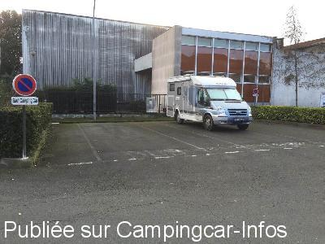
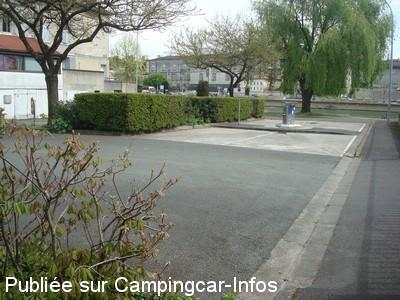
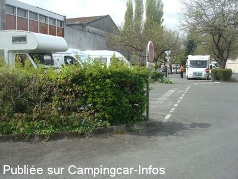
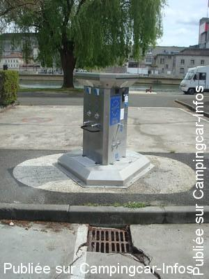
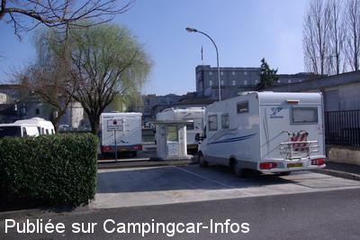
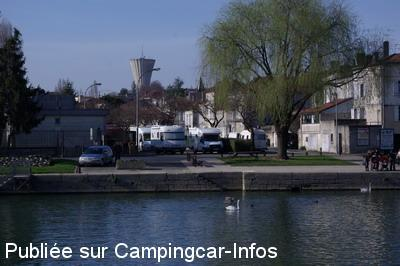

ASN = Aire de services avec stationnement nuit possible de :
COGNAC
(N° 460)
Accès/adresse :
Place de la Levade
16100 COGNAC
16100 COGNAC
Latitude : (Nord) 45.69841° Décimaux ou 45° 41′ 54′′
Longitude : (Ouest) -0.33225° Décimaux ou 0° 19′ 56′′
Tarif : 2016
Services : 2 €
Type de borne : AIRESERVICES
Services :


Tous commerces proches
Autres informations :
Ouvert du 01/04 au 15/11
3 emplacements nuit
4 emplacements parking + 40 places à partager avec les voitures
Aire goudronnée et éclairée, ombragée,
Stationnement limité à 2 heures sur les 4 emplacements parking autour de la borne de services
Tel + 33 (0)545 825 605
http://www.tourisme.fr/office-de-tourisme/cognac.htm

Le 26/02/2016 par Snoopy

Le 28/04/2012 par Catherine

Le 28/04/2012 par Catherine

Le 28/04/2012 par Catherine

Le 01/03/2008 par Xtian74

Le 01/03/2008 par Xtian74
de
AF68270
le 27/07/2015 :
De passage le 27/07/15, une aire encombrée par les voitures, quelques places déjà prisent d'aires accueil regrettable pour une ville comme Cognac, nous avons passé notre chemin, déçu !
De passage le 27/07/15, une aire encombrée par les voitures, quelques places déjà prisent d'aires accueil regrettable pour une ville comme Cognac, nous avons passé notre chemin, déçu !
de
Catherine
le 28/04/2012 :
Bonjour à tous.
De passage le 14/04/2012.
Nous n'avons pas dormi sur cette aire. C'était calme en journée. La place est petite et située un peu "derrière" le trafic.
3 places agréables, stabilisées et plates, prévues spécialement pour les camping-cars.
4 places 2 h maxi autour de la borne.
Sinon, parking sous les arbres (avec les branches qui descendent parfois assez bas) avec les voitures.
Bonjour à tous.
De passage le 14/04/2012.
Nous n'avons pas dormi sur cette aire. C'était calme en journée. La place est petite et située un peu "derrière" le trafic.
3 places agréables, stabilisées et plates, prévues spécialement pour les camping-cars.
4 places 2 h maxi autour de la borne.
Sinon, parking sous les arbres (avec les branches qui descendent parfois assez bas) avec les voitures.
de
hymer584
le 07/09/2011 :
Arrêt fin Août. L'aire n'est plus gratuite mais fonctionne avec une pièce de deux euros. Rien à redire cependant. Un ccariste, que je qualifierais de ventouse, nous a indiqué la possibilité de prendre de l'eau gratuitement vers les bateaux, sur le quai à droite de l'aire. Fonctionne avec un bouton poussoir, sans filetage à priori. Peut convenir pour remplir un jerrycan ou des bouteilles. Il ne faut cependant pas exagérer ! A vouloir avoir tout gratuit, cela risque fort de se retourner contre nous.
Arrêt fin Août. L'aire n'est plus gratuite mais fonctionne avec une pièce de deux euros. Rien à redire cependant. Un ccariste, que je qualifierais de ventouse, nous a indiqué la possibilité de prendre de l'eau gratuitement vers les bateaux, sur le quai à droite de l'aire. Fonctionne avec un bouton poussoir, sans filetage à priori. Peut convenir pour remplir un jerrycan ou des bouteilles. Il ne faut cependant pas exagérer ! A vouloir avoir tout gratuit, cela risque fort de se retourner contre nous.
de
La Garenne 85
le 07/03/2011 :
05/03/2011 Nous y avons passé la nuit, trés calme. Effectivement la borne était fermée. 3 emplacements cc marqués au sol pour le stationnement. Les 40 autres places sont sont le parking, en pente, voitures sous les arbres.4 places autour de l'aire de service 2 h maxi de stationnement
05/03/2011 Nous y avons passé la nuit, trés calme. Effectivement la borne était fermée. 3 emplacements cc marqués au sol pour le stationnement. Les 40 autres places sont sont le parking, en pente, voitures sous les arbres.4 places autour de l'aire de service 2 h maxi de stationnement
de
Xtian74
le 15/06/2009 :
Il y avait du monde sur l'aire à notre arrivée, fort tardive (eh! oui, les cognaçais sont si accueillants et si bons cuisiniers), mais quelques places disponibles. Une nuit tranquille
Il y avait du monde sur l'aire à notre arrivée, fort tardive (eh! oui, les cognaçais sont si accueillants et si bons cuisiniers), mais quelques places disponibles. Une nuit tranquille
de
Christian et Monique
le 21/07/2008 :
Très déçus de notre passage à Cognac où nous voulions passer une soirée et la nuit car ambiance festive sur le port. Cependant impossible de se garer, plusieurs camping-cars ventouses sur les 4 stationnements et sur l'emplacement des services. Je vais écrire à la mairie pour leur demander si nous sommes désirables et où se garer la nuit avec ou sans services proche du centre ville
Très déçus de notre passage à Cognac où nous voulions passer une soirée et la nuit car ambiance festive sur le port. Cependant impossible de se garer, plusieurs camping-cars ventouses sur les 4 stationnements et sur l'emplacement des services. Je vais écrire à la mairie pour leur demander si nous sommes désirables et où se garer la nuit avec ou sans services proche du centre ville
de
Xtian74
le 21/02/2008 :
Nous étions 9 CC (dont 3 ont squatté les emplacements réservés aux services du début de l'après-midi au lendemain matin : pourquoi se gêner ?). Belle journée passée à visiter Cognac sous une température printanière de presque 20°.
Nous étions 9 CC (dont 3 ont squatté les emplacements réservés aux services du début de l'après-midi au lendemain matin : pourquoi se gêner ?). Belle journée passée à visiter Cognac sous une température printanière de presque 20°.
de
Alain
le 14/08/2007 :
Impossible d'approcher l'aire pour vidanger, des squatters partout, même le long du quai du fleuve, vraiment dommage!
Impossible d'approcher l'aire pour vidanger, des squatters partout, même le long du quai du fleuve, vraiment dommage!
de
titi74
le 10/04/2007 :
Aire de services très propre, tous services eau, vidanges, électricité gratuits sauf eh OUI un bémol les CC squattent l'aire (4 places) toute la nuit et une bonne partie de la matinée (véhicules bien calés). J'en fait les frais. Un peu dommage que les gens ne respectent pas le temps de 2 heures. Bravo à la municipalité
Aire de services très propre, tous services eau, vidanges, électricité gratuits sauf eh OUI un bémol les CC squattent l'aire (4 places) toute la nuit et une bonne partie de la matinée (véhicules bien calés). J'en fait les frais. Un peu dommage que les gens ne respectent pas le temps de 2 heures. Bravo à la municipalité
de
Claude S.88
le 03/10/2006 :
De passage, j'ai pu admirer la qualité de l'aire de service... Malheureusement, je n'ai pas pu m'en approcher car les 4 places étaient occupées par des C.C. bien calés, antennes levées (voir photo). J'ai peine à croire que ces véhicules étaient là seulement pour 2 heures ... à moins que les chauffeurs, ayant abusé de dégustations du célèbre produit local, ne soient plus en mesure de reprendre la route ?
De passage, j'ai pu admirer la qualité de l'aire de service... Malheureusement, je n'ai pas pu m'en approcher car les 4 places étaient occupées par des C.C. bien calés, antennes levées (voir photo). J'ai peine à croire que ces véhicules étaient là seulement pour 2 heures ... à moins que les chauffeurs, ayant abusé de dégustations du célèbre produit local, ne soient plus en mesure de reprendre la route ?
de
Jacques Ramage
le 22/08/2006 :
Bonjour. Je vous signale que l'aire est complètement gratuite y compris les services !
Bonjour. Je vous signale que l'aire est complètement gratuite y compris les services !
de
Andy Harding
le 07/02/2004 :
Superb! Ideal for visiting the Cognac houses of Hennessy, Otard etc. Free electricity too.
Superb! Ideal for visiting the Cognac houses of Hennessy, Otard etc. Free electricity too.